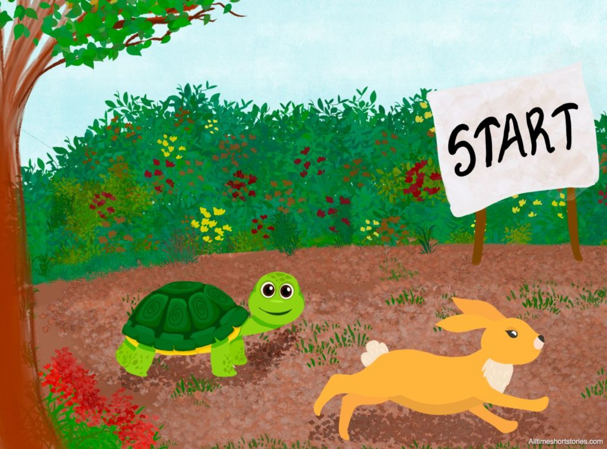

The Hare and the Tortoise

One fine day, a hare came across a tortoise slowly doing his chores at his own pace. When the Hare looked at the
Tortoise’s speed, he laughed and started making fun of the Tortoise for being so slow.
“How can you even get anywhere with this speed?” mocked the Hare.
The Hare sneered, “You’re a pathetic crawler! I can travel over an area of countryside with the ease of the wind, but
you’ll take an hour to go half a furlong. I can run so fast that I could leave you twenty miles behind me in a race and
be halfway through the end of one before you even got there.”
The Tortoise was fed up with the constant mocking from the Hare and wanted it to stop.
“Oh really! I might look slow, but I can get anywhere sooner than you think. So let’s run a race so I can prove it,” the
Tortoise replied. “Do you want to run a race with me?” challenged the Tortoise.
The Hare, seeing the whole affair as a joke, accepted; and the Fox was chosen to act as umpire and maintain the stakes.
So, the Fox that agreed to serve as a judge to the race set the five-mile distance and sent the runners off.
As soon as the race started, the Hare ran and was far out of sight. “ha! the Tortoise will never catch up with me. It is
so ridiculous.” thought the Hare. To show the Tortoise how ridiculous it was for him to compete against a Hare, the Hare
laid down on the path beside it to nap until the Tortoise caught up.
Meanwhile, the Tortoise kept walking slowly but steadily. Slowly, The Tortoise passed the Hare, who was napping without
the Hare realizing it. When the Hare woke up, he was shocked to see that the Tortoise was ahead of him! The Hare tried
to run faster, but it was too late. The Tortoise crossed the finish line first and won the race.
Moral: Never underestimate your opponents. Even if they appear to be weaker than you, they might still be able to defeat
you.